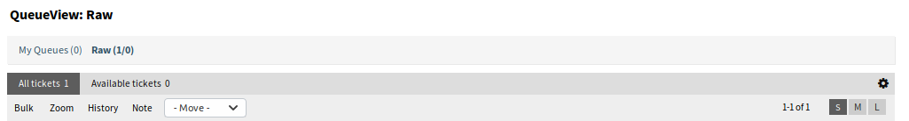
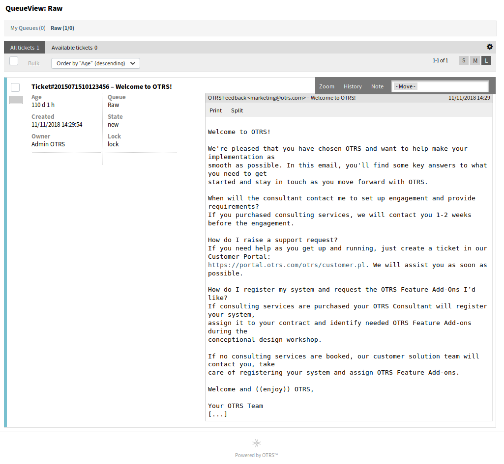

队列视图¶
使用此屏幕可查看特定队列中的工单。 队列视图 菜单位于 工单 菜单的 队列视图 菜单项中。
此屏幕有三种不同的视图：小、中和大。 您可以使用小部件右侧的按钮更改视图：S 表示 小/简洁（small）、M 表示 中/基本（medium）、L 表示 大/详细（large）。

队列视图 小部件顶部
每个视图在小部件的顶部都有一个过滤器，用于列出仅在特定队列中的工单，或者在 个人偏好设置 中设置的 我的队列 中的工单。
还有可以查看 所有工单 或仅 可用的工单 的过滤器。
- 所有工单
- 此选项列出所选队列中的所有工单。
- 未锁定的工单
- 此选项仅列出可用来处理的工单。
简洁版式队列视图¶
此视图以表格格式列出工单。

简洁版式队列视图屏幕
若要限制每页显示的工单数：
- 点击概览标题右上角的齿轮图标。
- 选择每页显示的最大工单数。
- 点击 保存 按钮。
若要设置显示的列并调整列的顺序：
- 点击概览标题右上角的齿轮图标。
- 将列从 可用的列 移动到 显示的列，反之亦然。
- 通过拖放重新排列 显示的列 中的列。
- 点击 保存 按钮。
注解
使用过滤器框只需键入要过滤的名称即可在 可用的列 中查找特定列。
若要按特定属性对工单进行排序：
- 点击列标题可按所选属性对工单进行排序。
- 再次点击列标题以更改排序顺序。
可以按特定属性过滤工单，但不是所有属性都可以用作过滤器。 可过滤属性在列标题中标有过滤器图标。
若要过滤工单：
- 单击列标题中的过滤器图标。
- 选择过滤器的值。
注解
可以设置多个过滤器。 活动过滤器在列标题中标有粗体过滤器图标，并在小部件顶部显示垃圾图标。 单击此垃圾桶图标可删除所有活动的过滤器。
此视图具有自己的管理工单的菜单。 选择工单行中的复选框以查看此菜单。

- 批量
- 用于工单的批量操作，可以更改多个属性（见下文）。
- 展开
- 打开 工单详情 屏幕以查看该工单的所有详细信息。
- 历史
- 将打开一个新窗口，显示工单的历史记录。
- 备注
- 可以给工单添加新备注。
- 转移
- 工单可以移动到其它队列。
基本版式队列视图¶
此视图以列表视图格式列出工单。

基本版式队列视图屏幕
若要限制每页显示的工单数：
- 点击概览标题右上角的齿轮图标。
- 选择每页显示的最大工单数。
- 点击 保存 按钮。
将鼠标悬停在工单行上，将出现一个浮动菜单。 浮动菜单具有与 简洁版式队列视图 部分中说明的相同的菜单项。

基本版式队列视图中的浮动菜单
详细版式队列视图¶
此视图以详细格式列出工单。

详细版式队列视图屏幕
若要限制每页显示的工单数：
- 点击概览标题右上角的齿轮图标。
- 选择每页显示的最大工单数。
- 点击 保存 按钮。
将鼠标悬停在工单行上，将出现一个浮动菜单。 浮动菜单具有与 简洁版式队列视图 部分中说明的相同的菜单项。

详细版式队列视图中的浮动菜单